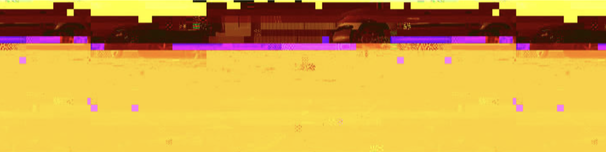
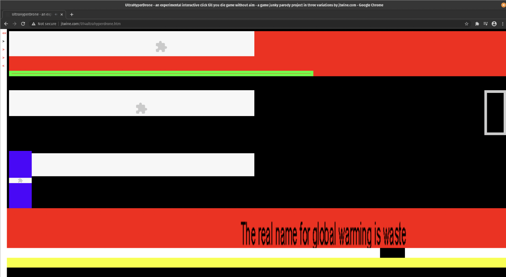

This exhibition, "A world of glitched art," brings together three pieces of net art that manipulate, reinterpret, and disrupt the everyday experience of browsing the internet. These works include digital distortion, perception, and a theme in the aspects of their work. In addition, these works add visual and structural expectations. These artists also encourage their viewers to reflect on the fragility and artificiality of online spaces. Also, this exhibition has clickable links, where you are able to visit the artist’s work on the actual website that they display their work on. Overall, this exhibition displays the varied amount of net arts that all have their own unique style.
Glitchbrowser (2015) by Dimitre Lima and Iman Morandi

Glitchbrowser transforms any web page into a distorted composition by glitching its images while retaining the site's structure. This net art tool highlights the aesthetics of error and the beauty found in digital decay.
Digital Canon #67 (2022) by André Fincato

Part of a larger archive, this work presents a surreal and reflective look at web-based imagery, layering visual nostalgia and minimal interfaces to emphasize shifts in digital communication over time.
Net Art Today #4: The Web is a Ruin (2021)

This project explores the remnants and aesthetics of broken web infrastructure. It showcases a poetic take on the abandoned, glitched, and archived digital artifacts of the past, treating them as ruins to be studied and experienced anew.